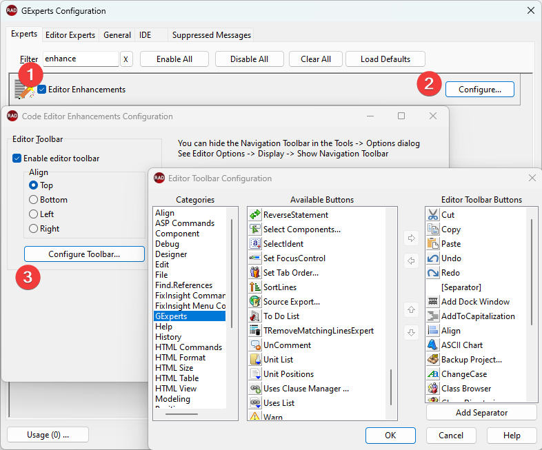

GExperts includes the ability to place a user-defined toolbar in the IDE code editor windows. Enable it from the Editor Enhancements under the GExerpts Configuration.

To select which buttons are visible on the toolbar, drag buttons from the list of Available Buttons to the Toolbar Buttons list. Reordering buttons in the selected Buttons list is also possible using drag-and-drop or the Up and Down arrows. To remove a button from the toolbar, you can drag it from the Toolbar Buttons list and drop it back onto the Available Buttons list
The majority of the available buttons are taken from IDE's main menu, but there are also several special buttons in the GExperts category that perform custom actions. These custom actions can execute GExperts experts, execute editor experts, show a list dropdown list of forms or units in the current project, or allow you to select a component on the current form by class and name. There is also a button to jump to specific positions in the current Delphi unit. An example editor toolbar is shown here behind the toolbar configuration dialog:

Note: Vertical toolbars do not support button separators.